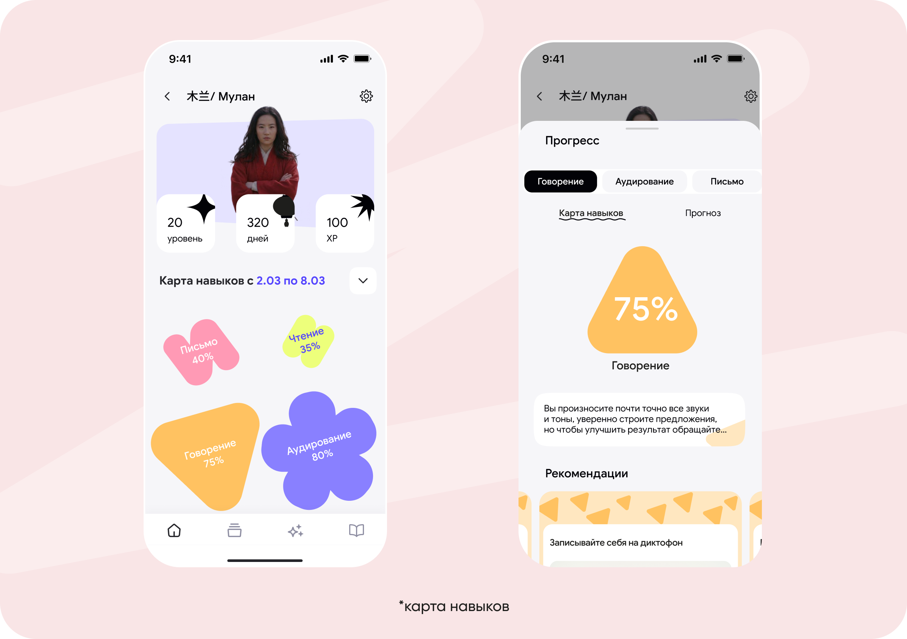
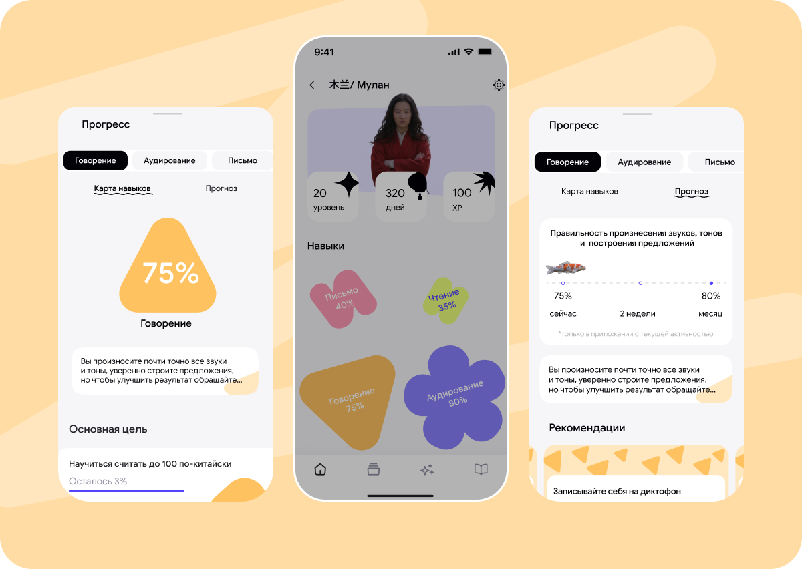
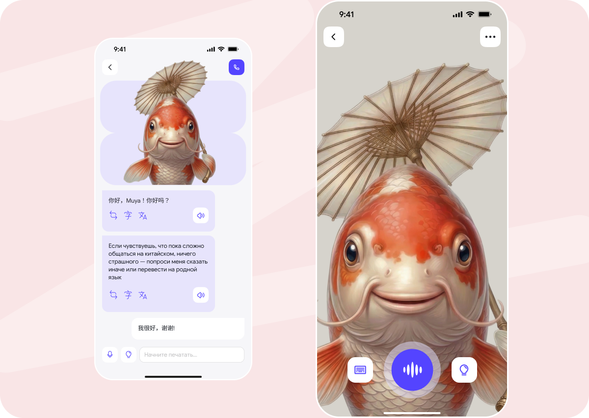
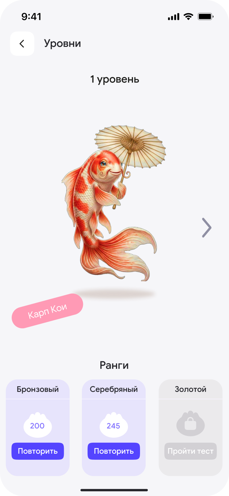
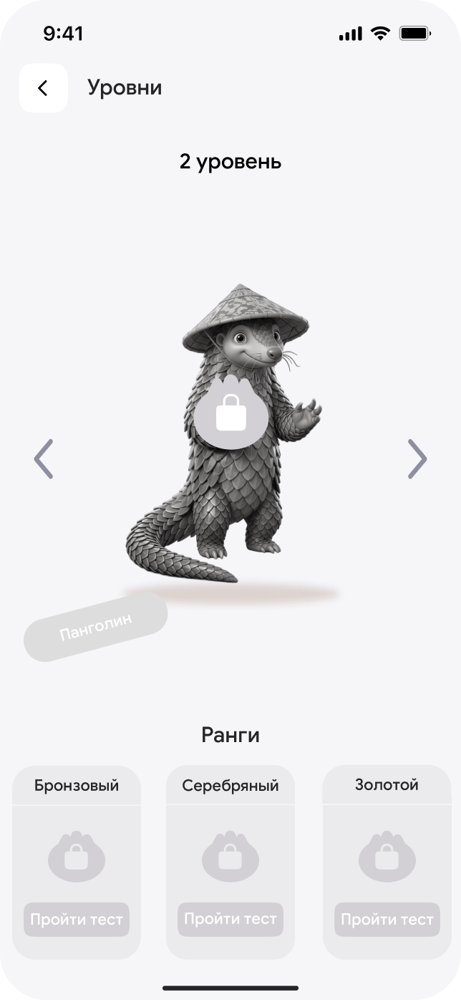

听力
Wildberries × BHSAD
Tingli
Профиль-центр учащегося
приложение
ux/ui
февраль 2026 – март 2026

Профиль-центр учащегося
Контекст
TINGLI — образовательная платформа в бета-версии с ограниченным контентом для изучения китайского языка от Wildberries & Russ
Невозможность отслеживать результаты обучения в приложении,
что негативно влияет на пользовательский опыт
Создать профиль-центр, где пользователь видит прогресс, цели, уровни,
и может отследить свои результаты. Наши решения частично взяли
в реализацию, релиз был в июне. Мы предполагаем, что наши решения помогут
увеличить среднюю сессию в приложении и количество завершённых уроков.
Таким образом, мы повлияем на MAU
Моя роль

Проводила кабинетные, глубинные, полевые и дневниковых
исследования,
Собирала JBTD, зеленые и красные силы,
Разрабатывала юзерфлоу и визуальный концепт экранов
Cобирала экраны в рамках концепта,
Сделала финальную презентацию и питчила,
Много практиковала китайский язык :)

Исследование
Главной задачей было создать профиль-центр, где пользователь видит
прогресс, цели, уровни, и может отследить свои результаты. Мы выявили
также потребность в кастомизации цели и стимулировании пользователя
за счёт краткосрочных прогнозов

Заказчик хотел бы в перспективе добавить возможность общения
с преподавателем, но сейчас такой возможности нет, поэтому мы подумали,
что можно развить функцию «ИИ-диалоги» с помощью ассистента, с которым
можно было бы переписываться, созваниваться или задать любой вопрос
по изучению языка

В ходе исследования мы обнаружили, что пользователям не хватает одного
пространства для отработки лексики, чтобы в любой момент иметь
возможность вернуться и повторить всё, что накопилось. Мы предлагаем
встроить умную камеру, которая оцифрует текст или отсканирует предметы
и предложит перевод
Китайский язык неразрывно связан с культурой Китая, поэтому для еще более
активного погружения мы предлагаем визуализацию уровней с мифическими
персонажами, сплеш экран с привязкой к праздникам и важным событиям


Результат
Мы решаем проблему фрагментированного опыта, где пользователю не приходится использовать несколько разных приложений
В итоге мы создаём не просто приложение, а устойчивую систему обучения, которая удерживает пользователя и растёт вместе с ним